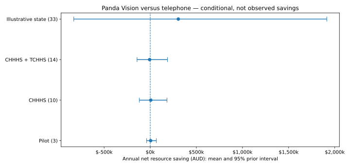
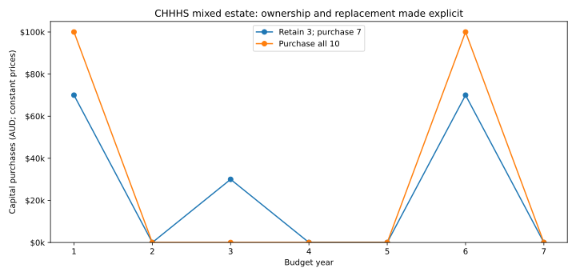
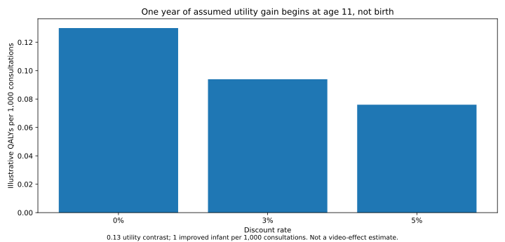

Conditional economic analysis. Not independent clinical validation.
| Network | Mean annual net saving | 95% prior interval | P(saving) |
|---|---|---|---|
| Pilot: 3 sites | $4,252 | -$38,979 to $66,225 | 50.5% |
| CHHHS: 10 locations | $5,721 | -$117,413 to $181,668 | 46.3% |
| CHHHS + TCHHS: 14 | -$6,773 | -$142,826 to $187,193 | 39.2% |
| Illustrative Queensland: 33 | $304,308 | -$828,871 to $1,913,200 | 65.6% |



| Pilot: 3 sites | $4,252 | -$38,979 to $66,225 | 50.5% | | CHHHS: 10 locations | $5,721 | -$117,413 to $181,668 | 46.3% | | CHHHS + TCHHS: 14 | -$6,773 | -$142,826 to $187,193 | 39.2% | | Illustrative Queensland: 33 | $304,308 | -$828,871 to $1,913,200 | 65.6% | ## Mixed equipment estate The same ownership record informs economic retention and cash purchases. Only Atherton, Mareeba and Innisfail are recorded as existing Panda installations. Two remaining years is a scenario assumption, not an observed service-life measurement. | Network | New installations in year 1 | Year-1 capital | |---|---:|---:| | Pilot: 3 sites | 0 | $0 | | CHHHS: 10 locations | 7 | $70,000 | | CHHHS + TCHHS: 14 | 11 | $110,000 | | Illustrative Queensland: 33 | 30 | $300,000 | ## Corrected secondary utility scenario With the stated illustrative 0.13 contrast, one improved infant per 1,000 consultations, one year of benefit beginning at age 11 and 5% discounting, the result is **0.076008 QALYs per 1,000 consultations**. This is not a video-effect estimate and is not included in the reference cost results. ## Investment and publication plan Compare telephone, mobile teleconference, Panda Vision, ceiling/wall PTZ and a complete tablet/OBSBOT configuration. Keep new purchases, retention and shared infrastructure distinct. The prototype is not an approved clinical installation. Use the explicit immediate-transfer, delayed-rescue and final-local-care paths; do not equate fewer transfers with better care. Report whole-system resource costs, bounded societal/family effects, CHHHS exposure and conditional state/Commonwealth allocations without counting transfers twice. Run declared configuration through the exact model, retain shared uncertainty across sites and alternatives, and report null/sceptical effects, clinical plausibility and prior-predictive consequences alongside expected savings. Repeat-contact workload and mixed deployment policies remain specified follow-on analyses, not fitted local estimates. Before submission: complete four critical full texts, independent neonatal/retrieval and economic review, current local funding/price verification, and permissions for corporate or licensed source materials. Simulated roles are author review only. ## Reproducibility and boundaries Configuration SHA-256: `ca704e84aa88f8c333eaef1ff45670936600a9b461e207a01d1057ffefebb0e6`. 44 paired structures × 20,000 draws. Generated reports and their input hashes are bound by release_manifest.json. Historical v7 Office artifacts are retained as historical, not the current release. The current memo, report, presentation, CSV tables and figures are generated together here. There is no newly certified recalculating Excel workbook. Source model: src/pathways_v6.py and regional/perspective adapters. Provenance: sources/registry.csv (where supplied), evidence registers, and resolved_inputs.json. IHACPA episode prices are prototypes, not patient-level DRG grouping or marginal cash tariffs. QEP/local QWAU and clinical effects remain uncertain. Software acceptance is separate from these numerical outputs. Missing lock, unavailable tools, Gitleaks, hosted CI, complete source migration and independent review remain unresolved until actually verified.